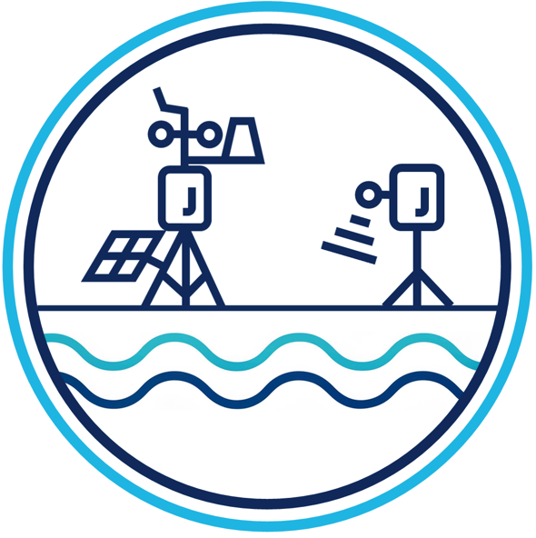

Bienvenidos a
INAMHI GEOGloWS
Una plataforma para el acceso, visualización, seguimiento y descarga de pronósticos
hidrometeorológicos e información satelital en Ecuador.
La implementación y personalización de la plataforma INAMHI GEOGLOWS ha sido posible con la colaboración del Instituto Nacional de Meteorología e Hidrología del Ecuador (INAMHI), Fundación EcoCiencia y el Centro Internacional de Agricultura Tropical (CIAT), mediante el programa SERVIR-Amazonia.
SERVIR-Amazonia forma parte de SERVIR Global, una iniciativa de desarrollo conjunto entre la Administración Nacional de Aeronáutica y del Espacio (NASA) y la Agencia de los Estados Unidos para el Desarrollo Internacional (USAID).
Aplicaciones
La plataforma INAMHI GEOGLOWS alberga aplicaciones para la visualización, seguimiento y
pronóstico de variables hidrometeorológicas.
Acceso
INAMHI GEOGLOWS proporciona un acceso cómodo y sencillo de los datos hidrometeorologicos a través de REST APIs y geoservicios.

Datos históricos
Los datos presentados en la plataforma INAMHI GEOGLOWS corresponden a observaciones
hidrometeorológicas históricas del Ecuador.
Monitoreo satelital
La plataforma INAMHI GEOGLOWS cuenta con un compendio de hidroestimadores satelitales,
modelos meteorologicos e hidrológicos globales.